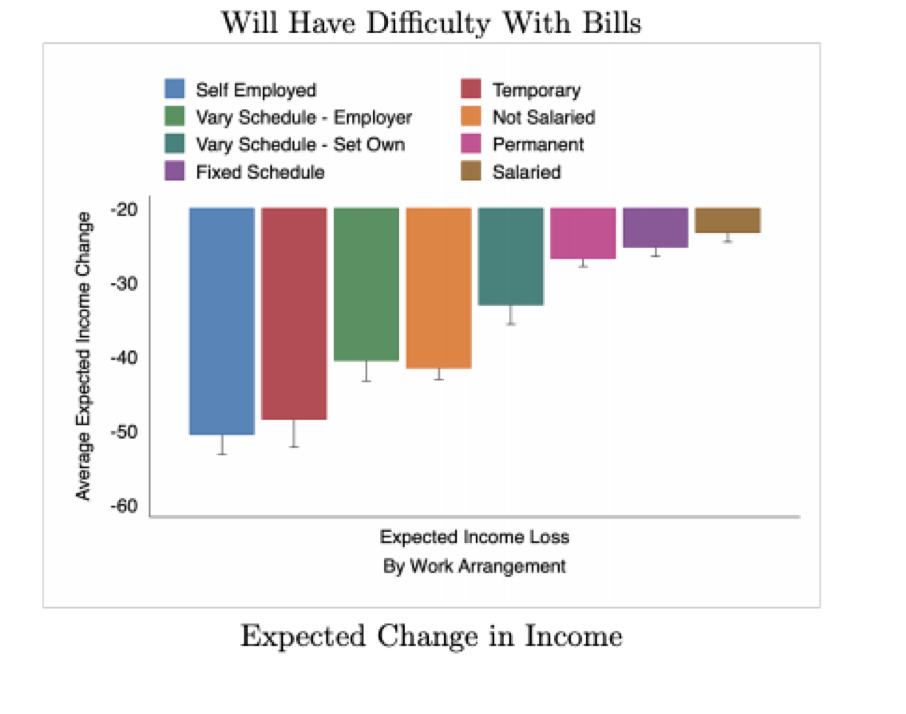

Consider three graphs that really on their own tell the story of the groups in the US/UK that did well and that did badly economically out of the lockdowns.
On the super-rich:

On the workers, particularly the bottom 25% (meaning those who in their characteristics like education and experience look like the bottom 25% in January 2020):

And for the UK on who is expecting trouble with paying the bills:

You btw see the same picture when it comes to whose children are worst affected by the school closures, who is more banned from travel than others, whose business is less essential than others, or whose sports are less essential than others. Basically the same story in all realms.
Who is "in this together" again? Methinks the top group. Why on earth the left is in favour of all this emerges as a puzzle some true left-wingers have also asked. I think the answer is simple: there is hardly any real left left, which is doubly surprising given the top graph.
Presumably the increased wealth of the rich is largely due to equity markets which, despite a panicky initial response, have boomed. It is interesting to try to figure out why this happened. It seems to me that the smart money punted on the market disruption being purely transitory with a small number of people not in the workforce being seriously damaged but with most productive workers not recording serious persistent long term effects. Of course, the market too anticipated a strong expansionary monetary and fiscal response that has caused asset price inflation. But it really is quite strange overall since prior to Covid-19 the world economy was showing signs of taking a breather and equity markets were slowing late in 2019.
Covid-19 was not like a financial crisis. It was an exogenous shock that didn't arise from, for example, financial sector or supply-side shocks of the oil price type. This might bolster the argument that "foresighted" capital saw the shock as purely transitory. Property owners and oldies like myself who own some financial assets have done well from Covid-19 whereas those wage-earners displaced temporarily from jobs and left to pay the bulk of the bills that the "crisis" has generated have done badly and will continue to do so for years. .
"Why on earth the left is in favour of all this emerges as a puzzle some true left-wingers have also asked."
You could look at health data. If you look at low SES groups they are fatter and have more comorbidities than other groups. They also have less money for healthcare (especially in highly inequitable health-care systems like the US). So getting covid is worse for them than other groups as was seen in the US especially and I believe the UK too (and given covid was especially bad in Marseille -- the poorest big city in France -- you can probably add France to that list). So they have more health reasons not to catch it than richer groups. Some of your categories are also ambiguous here. For example, if you are self-employed in a small business that doesn't make much money (which is many businesses), you clearly have more reasons not to get sick or you go under because you can't work. So they are damned if you do and damned if you don't.
Related to your entry, Paul: https://www.facebook.com/aljazeera/videos/918789538857338
Thank you for the link, Paul, which accords with the work being done by the German Corona Committee and Simone Gold's team in USA. The long-postponed pandemic has now arrived in Australia where I am not aware of any significant legal fight-back. Have you seen the study of data from Israel published in the Journal of Vaccines? The title is "The safety of Covid-19 vaccinations -- We should rethink the policy." The authors are Harold Wallach, Rainer J. Clement and Wouter Aukema.
The article was controversial and was 'retracted'.
It is curious how these subjects attract the anti-vaccination loony squad, no matter how obvious it is that they work (see the UK or Israel). I wonder when we'll start getting the 5G loonies too.
Conrad -- Do you think Pierre Cory, Peter McCullough, Mike Yeadon, Robert Malone and Sam White, featured here, to name a few, are in the loony squad? Malone invented the mRNA vaccines and Yeadon was a Pfizer vice president, producing vaccines all his working life. He made the same recommendation as the analysts of the Israeli data -- only those at risk should take the vaccine. I just read the abstract. I was hoping one of our learned economists might have a look at the data. Israel is the most thoroughly vaccinated country. The government sold its soul, or at least its bodies, to Pfizer. Malone has alerted the Food and Drug Administration to the dangers of the spike protein, which is the basis of the vaccines in use in Australia, Britain and USA. Luc Montagnier, the legendary student of viruses and vaccines, says the Covid-19 vaccines should be withdrawn while Australians who should know better are arguing for mandatory vaccinations. My personal view after listening to Whitney Webb's interview with Reiner Fuellmich is that the links between universities, individual academics, governments, pharmaceutical companies, the military, media etc are now so corrupt and interwoven that all vaccines should be regarded with suspicion. I'm sticking with cod liver oil, a routine supplement in the northern hemisphere winters of my childhood when we did not see so much of the sun, that major source of vitamin D.
Jerry is right, there are many serious medical scientists bringing solid pieces out that raise doubts about the vaccines. On the quiet, many Western public health agencies are also now bringing out warning, if only to cover their own *sses. The sceptical voices are proven right time and again with their warnings of possible side-effects.
For Conrad, who is normally not easily misled, to dismiss such voices so easily tells you of the amazing success of the well-funded propaganda war being waged.
I too have serious misgivings about these vaccines, though I would not recommend the over-50s to not take them. I am double-vaccinated myself (a condition of travel nowadays) and my current reading is that among the old the benefits outweigh the risks. But there are unknowns and I do not want my kids (19, 22, and 25) to take them.
As I have said before, I take the age-specific excess-death graphs by country as the best evidence available on whether vaccines are good or bad. Anyone can link the changes in those graphs with the % vaccinated in a country.
Do bear in mind of course that one 10-year old dying of heart complications represents about 65 years of lost life, versus a much lower number for the average covid-victim. That asymmetry is important in any "is it worth it" calculation.
What do you mean, Conrad. The jabs don't come with 5G? That'd be very disappointing. I was counting on it!
"Luc Montagnier, the legendary student of viruses and vaccines, says the Covid-19 vaccines should be withdrawn while Australians who should know better are arguing for mandatory vaccinations."
I have yet to hear anyone here in Straya argue for mandatory vaccinations (except for workers in old-folk homes which seems reasonable given their clientele and their comorbidities).
Glad to hear that Paul got his jabs, still waiting from my second (AZ) and hopefully will get a Pfizer one later this year once they are in excess supply. The evidence I have seen (e.g., from the German equivalent of ATAGI) suggest strongly that some such mix really reduces the chance of contracting the virus and reduces ill effects if you do).
Are there side-effects of these jabs? Well, yes, but the odds of blood-clotting seem so minimal (certainly compared to other risks such as driving or taking the birth-control pill) that it seems a good trade-off. The consequences of getting infected can be considerable -- even if you relatively young -- and surely, as Paul remarks correctly, the benefits of vaccination increase with age.
Here is another interesting bit of information worth taking into account:
https://www.forbes.com/sites/jemimamcevoy/2021/07/01/995-of-people-killed-by-covid-in-last-6-months-were-unvaccinated-data-suggests/?sh=1b06b5b0493d
Here is a fact-check of what Montaignier allegedly said:
https://www.aap.com.au/french-nobel-laureate-falsely-credited-with-faux-vaccine-quote/
Paul, since the death rate of covid is .3% even by your reckoning, and essentially 100% of people will catch covid sometime, I think we can reasonable assume the trade-off is good. This is especially because we have decent data from many countries now and the number of shots is into the hundreds of millions. If people were dropping off like flies, we would know. Of course you need to take vaccine safety seriously, but it has been, and that article was clearly far off the mark.
in case you missed it, from Science today: https://science.sciencemag.org/content/373/6551/147?utm_campaign=toc_sci-mag_2021-07-08&et_rid=79427868&et_cid=3841956
By the way -- I actually agree with you on the vaccination of children. I don't think there is great evidence to show they need it, although one might consider whether they are getting the virus potentially permanently (i.e., past the blood-brain barrier). This also concurs concurs with the NH&MRC guidelines which are ignored by the government.
In this respect, since vaccinated people are often getting the virus anyway but vastly weaker symptoms (which seems an optimal outcome at the individual level as presumably you build additional defences), all of the unvaccinated people are going to get it even if children are vaccinated. So the argument that children need to be vaccinated so they don't transmit it isn't valid.
It has occurred to me the Science article may be behind a paywall, so those of us not lucky enough to get these for free can't read it. Apart from the politics of it (people resigning, poor reviewing etc.) here is the important paragraph:
"The authors computed COVID-19 deaths prevented by vaccines by using data from a study of 1.2 million Israelis. They estimated that 16,000 people needed to be vaccinated to prevent one COVID-19 death. To compute deaths “caused” by vaccine side effects, they used EU data on vaccines delivered in the Netherlands and data from the Netherlands Pharmacovigilance Center. That registry, also called Lareb, is a passive surveillance system in which anyone can file a report of an adverse event after vaccination, whatever the cause. Such databases are not used to assess vaccine risks, but to search for early signs of rare vaccine side effects for follow-up studies."
So you can see, this has a very strong parallel with the long-covid people who you've been arguing with, who also report stuff like this as population data . Presumably most of the links posted and comments, such as that above, are people that have probably not bothered to read nor think about the data nor wait for expert commentaries to come out. It's a classic case of self-confirmation bias and echo chambers.
Reiner Fuellmich interviews Professor Harald Walach in German on corona-ausschuss.de and I am hoping to find an English translation. I have seen a couple of spellings but the caption also refers to Rainer J. Clement so I assume the interview refers to the article in The Journal of Vaccines, which is peer reviewed. My German is non existent.
The Luc Montagnier interview with the German team on corona-ausschuss.de was conducted in English. Montagnier speaks with a French accent but I heard him clearly enough. Robert Malone's interview with Bret Weinstein was removed from You Tube but can be seen on Odyssey. Whitney Webb is interesting on the financial holdings behind the vaccine producers. I have no talent for medical science or statistics but I have read enough to convince me not to permit anyone to inject the spike protein into my body.
Stephen Duckett and Anika Stobart of the Grattan Institute writing in John Menadue's Pearls and Irritations blog of 8 July propose extending mandatory vaccinations. This is the edge of the wedge from people who should know better. The Australian Labor Party, of which I am a member, is playing politics with the Covid issue in its usual wishy-washy fashion. The Federal Government is accused of being slow with the "roll-out" or something. The slower the better, as far as I am concerned. Sunetra Gupta was my first source on Covid matters. She was not anti-vaccine but favoured the more targeted approach. Peter McCullough tells some of his patients that they would not last three hours with Covid and should take the vaccine. I signed the Great Barrington Declaration as soon as I heard about it from Paul Frijters on these pages.
Well, first, what is a "true" left-winger ?
I hypothesise that a likely answer to the quoted puzzle is: those pushing control measures (lockdowns, masking one's face etc) with vigour (likely tinged with some glee) are mostly from the category of secure job, high pay, know best, contempt for the lower orders. Such a group pretends to leftyism to try and gain support by numbers.
That wonderful country pub sequence in the film Caberet wherein the working class customers, drinking beer of course, enthusiastically join in singing "Tomorrow Belongs ... etc" with the Hitler Youth while the aristocratic anti-hero sniggers at them and then drives off in his Daimler ...
No-one is forcing you to take the vaccine, so if you don't want it then don't take it. Many people would like a vaccine tomorrow, so if you want the roll-out as slow as possible, then all you are saying is you'd like other people not to have it if they want it.
In this respect, it is surprising how the anti-vaccination constantly moan about authoritarian government, yet many want vaccines banned and others stopped from taking it, like you.
Why not let people make their own evaluation and take it as they wish? This way, once everyone who wants it gets it, there is far more reason for the government to give up on the current rules.
In addition, if vaccines work, then, as even Boris realises, the cost of lockdowns is far less worth it if only 20% of people are likely to die.
Ian,
for me the quintessential characteristic of a true left-winger is an interest in the downtrodden: they should be on the side of the poor and those at the bottom of society. If someone is not in favour of high levels of redistribution, I do not consider them left-wing.
Nobody is forcing me yet and when the regulation does come I have the option of retiring from my present occupation. Those at risk from the virus are elderly people who are overweight or diabetic. I hope those who opt for vaccination are aware of the risks from the vaccines.
A handy up-to-date summary of the virus and vaccine situation comes from pathologist Ryan Cole in a 25 minute interview which I encountered on a link to today's post by Paul Craig Roberts under the catchy title of "A Conspiracy to Murder."
Well put, Paul. I always understood the left to be about economics but it has become mixed up with gender and race. These may well be worthy causes but they are obscuring the essential mission that you define so clearly.
Indeed. In my youth I was charmed by the emerging green-left movement in Europe. Within about 15 years they ceased being either left or green. They had latched onto ideological stances that lead them to policies that were the opposite of what they professed. It was very odd. And those were the good old days.
+ 1
Meant to second Conrad's comment.
Jerry you previously just asked people to think about a paper which was retracted due to what statisticians think of as the first thing you need to look for -- the GIGO principal. Garbage in Garbage out.
You've now said that only some tiny group is at risk from covid, which isn't true. Probably more than 30% of the Aus population have at least one risk factor. Most won't die, but many will be sick for ages.
Finally, you're now complaining that workplaces shouldn't take precautions (i.e., workplace health and safety). This already exists in areas like schools and early childcare where people have to have a working with children check and need to have their vaccinations up to date (I have both). This is of course a good thing, not a bad thing. If you can't get these, you shouldn't be working in the area. Extending it to other vulnerable groups (aged care) is a no-brainer.
https://www.cdc.gov/nchs/nvss/vsrr/covid19/excess_deaths.htm
You might to have a look at who has actually died as a function of age here. As you'll find out, it is not just a bunch of very old people, unless it's a conspiracy of the CDC...
Some issues such as gender and race sit just as comfortably with the libertarian right. I enjoyed your venture into utilitarianism. My mother told me she named me after Jeremy Bentham. She was probably taking the piss. She often did.
https://www.sciencemag.org/news/2021/07/scientists-quit-journal-board-protesting-grossly-irresponsible-study-claiming-covid-19?utm_campaign=Gadi&utm_source=AAAS&utm_medium=Facebook
+ 1
I have a working with children card and sometimes confuse it with my driving licence. They look the same. This is black and white. (Actually it is deep red.) The vaccines are not safe and the process is being criticised by a host of people who know a lot more than you and I. I am about to watch the Fuellmich interview with Robert Malone that has just gone up on corona-ausschuss.de.
I urge you to watch the Malone interview. The vaccines now in use are developed from his research into gene therapy at the Salk Laboratories.
The issue now is the safety of the vaccines. We have had acres of controversy on the origins of the virus, efficacy of lock-downs, masks etc. Now it the vaccines and I think you are on the wrong side of the argument.
On the subject of the Journal article on Israel, Conrad, I have noticed even with my limited skills that articles against the grain of the official narrative are soon shot down on the internet. I did not think this would happen with a clinician of such eminence as Peter McCullough, but it did. So I was looking for more information on the Journal of Vaccines article and hope I can find a translation of the Walach interview with Fuellmich. Unfortunately I never learned to speak German, an awful oversight for a Beethoven man. Events are moving quickly in Australia as people play politics with a federal election not far away. I would like to see you look into the issue more deeply. You appear to have a good brain. I do recommend Robert Malone, a scientist who chooses his words carefully and speaks in a measured manner. Reiner Fuellmich is the German lawyer who took on Volkswagen and won.
Yes, it's a nice line, that the Green-left is neither.
Like the Holy Roman Empire was neither holy, Roman, nor an empire. Or the converse joke. The problem with GDP is that it's Gross, it's Domestic and it's a Product.
Paul This might be of interest https://unherd.com/2021/07/how-the-democrats-fell-for-mussolini/
I very much agree with your confusion about why the left are so pro-lockdown. It could have gone either way. Trump is probably the reason.
pf
The Brussels bureaucracy has recently put forward the utterly offensive regulation that fuel for private jets will not be taxed.
"Lockdowns and privilege" - your headline here.
So, these people cannot be true lefties then. They just pretend to gain naive Green support. Cabaret's Groundhog Day.
Very interesting graphics. I liked your theory about "smart money", I agree that there is some truth in your statements.